Explore NEW YORK CITY!
Whether you're a New York City native or a newcomer to the city that never sleeps, we guarantee that there are things to do on this list which you never knew existed!
LCSC has taken the time to compile a bunch of awesome places in the city that we know you'll have a blast at, all including links to websites, reviews, and pricing information!
Do you know of a place that should be on this list? Please email the info to brkatzman@jtsa.edu!
LCSC has taken the time to compile a bunch of awesome places in the city that we know you'll have a blast at, all including links to websites, reviews, and pricing information!
Do you know of a place that should be on this list? Please email the info to brkatzman@jtsa.edu!
THIS COLOR INDICATES THIS ACTIVITY IS FREE!
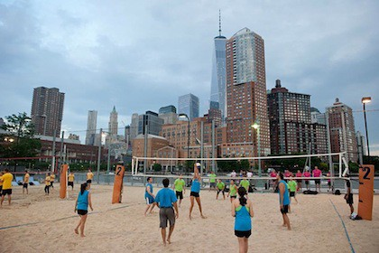
BEACH VOLLEY ON A PIER
You can play Beach Volley Ball for free at Pier 25 on Saturdays from 11am-3pm. They request a $5 donation. You can register for a court here
CENTRAL PARK ROWBOATS
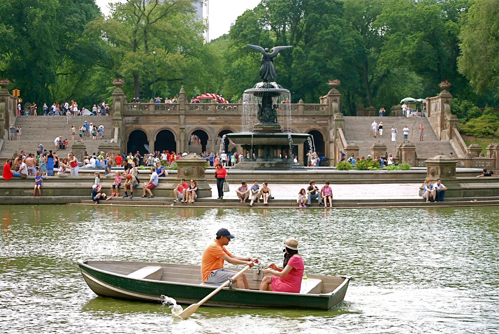
You can rent rowboats (up to 4 people per boat) or non-foot Ocean Kayaks at the Central Park Loeb Boathouse (The Lake off East Drive at 74th Street). Website
Read More
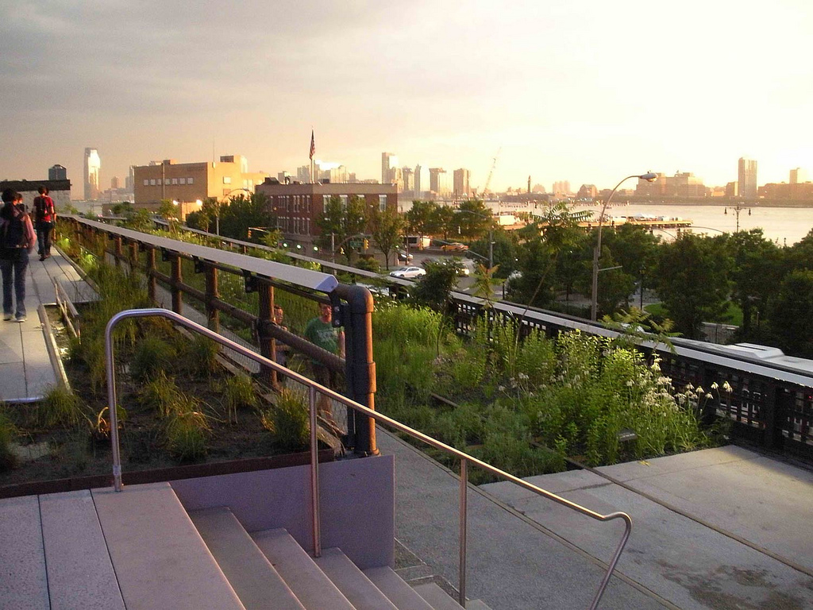
THE HIGH LINE
The High Line is a public park built on an historic freight rail line above the streets on Manhattan’s West Side. From Gansevoort St. to West 34th St, between 10th & 11th Ave. Open daily from 7am-10pm. Website
Read More
KARAOKE
Arlene Grocery’s Rock ’n’ Roll Karaoke offers free karaoke on Mondays at 10pm.
More Karaoke Venues
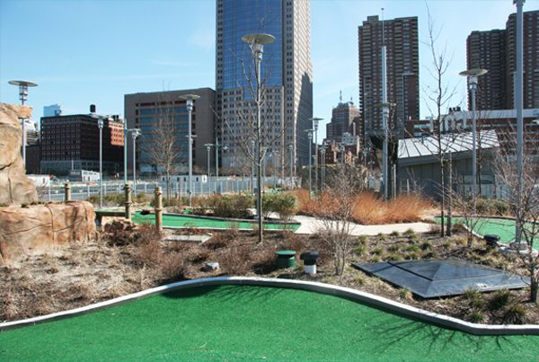
MINI GOLFING
You can go mini-golfing for $5 at Pier 25 daily from noon-6pm. No reservations are necessary for groups under 20 people (including children). Make sure to bring cash, because admission is cash only. For more info, check out the Pier 25 website
MUSEUMS
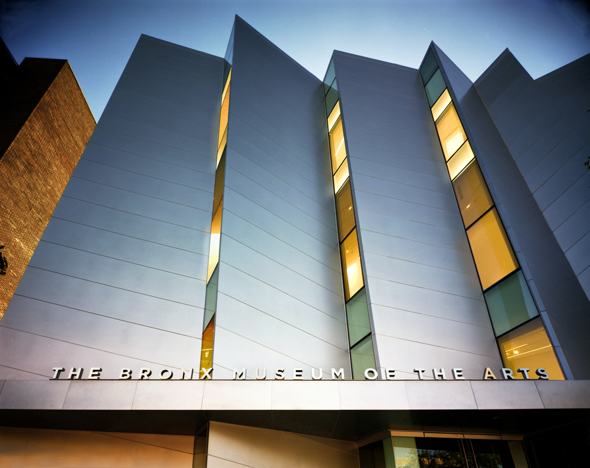
Columbia students have free access to a multitude of museums in the city with a valid student ID. For a list of participating museums, see here
Night Museums
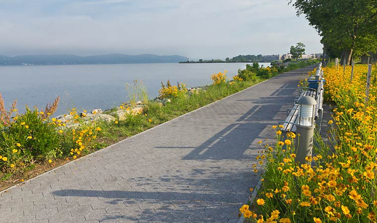
NATURE WALKS
There are free guided nature walks along the Hudson River Park’s esplanade on Sundays from 9-10am. Meet at the Christopher Street Fountain at 9am sharp. Check out the Hudson River Park website for more info
SHABBAT IN A BAR
The Warehouse provides an alternative Shabbat experience. These free Shabbat services take place in different bars throughout the city. To find out where the Shabbat is going to take place and to RSVP, visit the website
NEW YORK BOTANICAL GARDEN
OfferS a student discount with a valid student ID. Grounds only passes are $5 and all-garden passes are $18 on weekdays and $22 on weekends. Grounds passes are free to everyone all day on Wednesdays and from 10-11am on Saturdays.Open 10am-6pm daily. Tickets on the website
CHELSEA PIERS
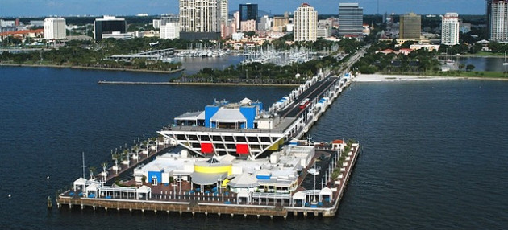
At Chelsea Piers you can go rock climbing for 2 hours for $25, hit the batting cages for $2.75 for 10 pitches, go bowling (prices vary depending on time), and ice skate for $10 (+$5 for skate rental).
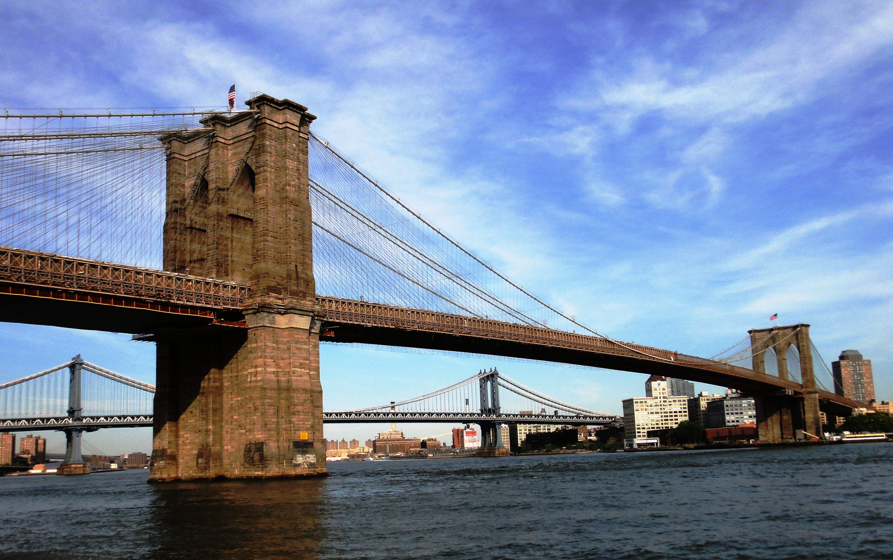
BROOKLYN BRIDGE
A fun and free thing to do in the city is to walk the Brooklyn Bridge! It's a 1.3 mile walk. The views are much prettier when you walk from Brooklyn to Manhattan.
More Info and Directions
AMATEUR NIGHT AT THE APOLLO
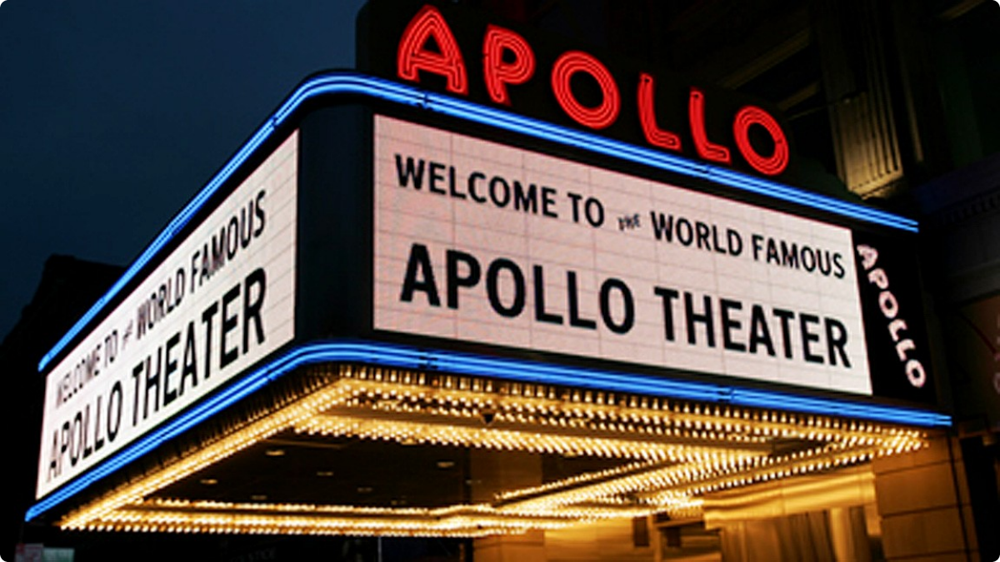
Amateur Night at the Apollo, a talent competition, has been around for over 75 years, serving as the model for Star Search and American Idol. Website
More Info
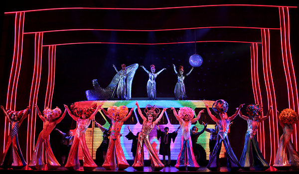
BROADWAY SHOWS
Besides seeing the FREE "Broadway in the Park" performances (see "Bryant Park's Broadway in the Park" under "Performances"), you can also see Broadway Shows at discounts.
SHOWS
OUTDOOR MARKETS
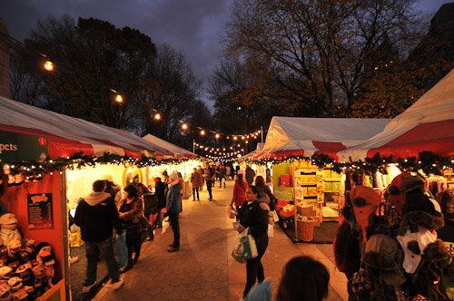
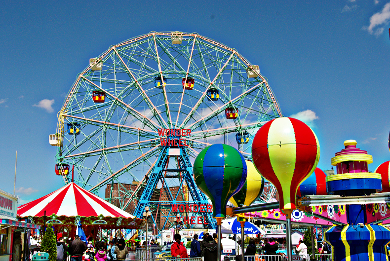
CONEY ISLAND
Coney Island is a New York City neighborhood that features an amusement area that includes 50 or more separate rides and attractions. It is the birthplace of the hot-dog.
5Pointz

The world’s premiere “graffiti Mecca,” in Long Island City where aerosol artists from around the globe paint colorful pieces on the walls of a 200,000-square-foot factory building. Open Wednesday – Sunday from 10am – 8pm.
Website
Website

STATUE OF LIBERTY
Tickets (ferry included) cost $17 on Statue Cruises. Crown access can be purchased for an additional $3 and pedestal access can be reserved for free (both are subject to availability). For more information about the monument, check out the National Park Service website.
KAYAKING
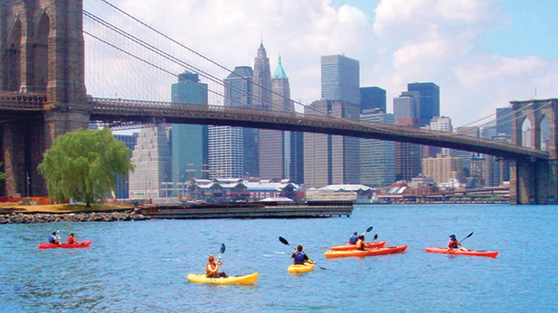
Downtown Boathouse offers free walk up 20-minute kayaking sessions every weekend and holiday 9am-6pm, and Thursdays from 5pm-7pm. Check out the Downtown Boathouse website.
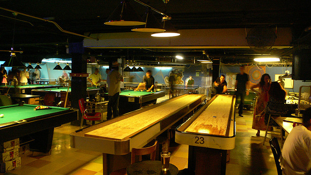
FAT CAT
Named New York's best pool hall by New York Magazine, Fat Cat offers a wide variety of gaming entertainment choices: billiards, ping pong, shuffleboard, foosball, chess, and more. Website
DRAWING IN BATTERY PARK
Battery Park City Parks Conservancy offers a variety of free drawing programs. Materials are provided. For more information about these programs, check out the Conversancy’s website.